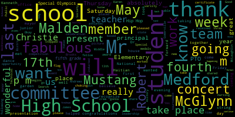
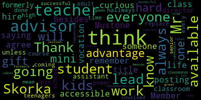

[Lungo-Koehn]: in the Alden Memorial Chambers, Medford City Hall, as well as on Zoom. You can watch on Comcast 15, Verizon 45. You can also call in. Oh, no problem. Okay. Regular meeting, May 15th, 6 p.m. here in the Alden Memorial Chambers and also via Zoom. You can also call in by dialing 1-305-224-1968. Enter meeting ID 912-7874-1852 when prompted. Member Ruseau, if you can call the roll.
[Ruseau]: Member Graham.
[Lungo-Koehn]: Here.
[Ruseau]: Member Hays. Member Kreatz.
[Lungo-Koehn]: Here.
[Ruseau]: Member McLaughlin.
[Lungo-Koehn]: Here.
[Ruseau]: Member Mestone. Member Ruseau, here. Mayor Lungo, here.
[Lungo-Koehn]: Present. Seven present, zero absent. Please rise and salute the flag.
[SPEAKER_06]: I pledge allegiance to the flag of the United States of America and to the Republic for which it stands, liberty, and justice for all.
[Lungo-Koehn]: We have the consent agenda. Bills and payrolls, minutes from regular school committee meeting, May 1st, 2023. Is there a motion on the floor? Motion to approve. Motion to approve. Is there a motion? By member McLaughlin, seconded by- Second. Member Kreatz, all those in favor? Aye.
[SPEAKER_06]: Aye.
[Lungo-Koehn]: All those opposed? Minutes are approved. Is there a motion to suspend the rules? by member McLaughlin, seconded by member Graham. All those in favor?
[lRR2dgf0NZM_SPEAKER_11]: Aye.
[Lungo-Koehn]: Aye. All those opposed? I believe we're taking number four out of order under reports of the superintendent. Is he presenting?
[Jim Lister]: Robotics, yes.
[Lungo-Koehn]: Okay, Principal Fallon's in route, so we can revert back to the regular business, member by member.
[kZGTRaqmFyM_SPEAKER_05]: Oh, the doors are locked? The doors downstairs are locked?
[Ruseau]: Well, that could be a problem.
[SPEAKER_06]: Oh, front's locked too?
[Jim Lister]: Oh, okay, got it. Sorry, nope, nope.
[kZGTRaqmFyM_SPEAKER_05]: Can I make a motion to take item number two of the superintendent's report out of order? I believe we have the right folks for that.
[Lungo-Koehn]: Yes, number two, special recognition of Kenneth Thompson Rodriguez, 11th grade, MHS student, Mustang Hero Award, Dr. Marice Edouard-Vincent, our superintendent.
[Edouard-Vincent]: Good evening, I am truly pleased and honored to present this Mustang hero award for special recognition to Mr. Kenneth Thompson Rodriguez, who is an 11th grade student at Medford High School. I am pleased to present him with this award. Last week on Tuesday, May 9th, the high school nursing office received an emergency call on the walkie-talkie during student lunches. When nurses Jennifer Silver and Sarah Kelly arrived at the scene, Kenneth had stepped up and given a fellow MPS student the Heimlich maneuver. And his fast action really helped that student who was choking. And just an important fact for everyone to know that the nursing office shared with us that in the United States, choking is the fourth leading cause of unintentional injury death. So we are very, very proud of you, Kenneth, that you took the initiative, you stepped up and helped your fellow Mustang. So we would like to present you with this special certificate, and I will pass it on to the mayor.
[Lungo-Koehn]: Thank you. Kenneth, amazing. We're all very proud of you. Thank you for stepping up. This is the Mustang hero award award we're presenting you with and speck special recognition for outstanding civic response and that's signed by Dr. Edouard-Vincent and myself and school committee.
[SPEAKER_06]: If you want to say a few words, kind of tell us if you were trained to do that or how we can put it to action.
[SPEAKER_01]: To be honest, it was just like an instinct. I seen her choking, so my first thought was to help her out and make sure she was okay. And yeah, that was pretty much it.
[Jim Lister]: Congratulations. Maybe you're
[SPEAKER_06]: Yes, we're still under suspension, so we'll take number four as principal.
[Lungo-Koehn]: We're still under suspension, so we'll take number four because I saw Principal Fallon pop in. We have a report to recognize and honor the Medford vocational technical high school robotics team. The team will head to the world championship mate ROV competition being hosted by St. Rain Valley School District in Longmont, Colorado on June 19th, 2023. Mr. Fallon, if you'd like to come on up, tell us more about it. I was able to hear a bit this weekend, seems pretty fabulous. Just a little face with the speaker.
[Fallon]: There we go. Good evening second win in two years for our students and we're very proud last year they went to California this year they'll be headed off to Colorado. I'd love it if one of you could explain, please.
[Edouard-Vincent]: Mr. Fallon, can we have Mr. Sam Christie, the wonderful teacher, and I know Mr. Noah Lukowitz isn't with us, but please come forward as well for your wonderful leadership and instruction of the students.
[SPEAKER_16]: I'd love it if you all could come up to the front. You are the stars of the show, so.
[Lungo-Koehn]: Yeah, everybody, introduce yourself, too. Yeah, why don't we start by introducing ourselves? What a great job.
[Ruseau]: Hello, I'm Scott Campbell, and I'm a sophomore
[SPEAKER_09]: I'm Ben Burtz, and I'm a sophomore. I'm Noah Gibson, and I'm a junior. I'm Matthew Harris, and I'm a junior. I'm Aaron Bendaniel, and I'm a sophomore.
[SPEAKER_06]: underwater robot. Tell us all about it.
[SPEAKER_00]: Yeah, so it's an automated ROV competition. It's an underwater robot competition, where you basically you build a robot that's designed to compete In a to complete various different tasks that are supposed to simulate like environmental stuff. So, for example, you know, moving like solar floating solar panel rays or moving trash stuff designed to like help protect the ocean. stuff like that. And we built an ROV. It's a remotely operated vehicle. We can control it from the surface and it goes underwater and it does all of these different tasks. And in late April, we had our regional competition down in Buzzards Bay and we won that. So now we get to go to the world championship, which is hosted as mentioned in Colorado. Amazing. It was a lot of fun. Very rewarding work.
[Edouard-Vincent]: Fabulous.
[Fallon]: And of course, this wouldn't be possible without the leadership of the instructors we have in the robotics and engineering program, Mr. Sam Christie, who's here with us tonight, and Mr. Noah Lukiewicz. Did you want to say anything?
[Edouard-Vincent]: Yes, come on up, Mr. Christie.
[Fallon]: Yes, you do.
[Edouard-Vincent]: Don't be shy.
[SPEAKER_02]: My main job is to keep the lights on while they do all the work. So I am there a lot, but it's really up to them to finish this thing. But it's really impressive work they've done. In their rookie year, they won the New England Regionals. It was impressive. This year, we beat Exeter Academy. So that's sort of a nice thing for Medford to do. And yeah, really excited for them to go forward. Also, they're juniors and sophomores, so one more year with the same team. So it's fabulous.
[Lungo-Koehn]: Do you know next year's category yet?
[SPEAKER_02]: It's the same robot each year, actually. So teams that have been there for multiple years have more advantage. So it was even more impressive. I think they won in their first year. So yeah, very cool.
[Edouard-Vincent]: Mr. Christie.
[SPEAKER_16]: Yes. offered to stay with him as well.
[SPEAKER_02]: And she helped, yeah, yeah. So spring break was basically at the shop.
[Edouard-Vincent]: Mr. Christie, can you say who we're in competition with? You were mentioning.
[SPEAKER_02]: Oh yeah, so it's fun to see if you go on the site, you can see things like Beijing, Tokyo, Medford.
[Edouard-Vincent]: It's fabulous, fabulous, fabulous. Absolutely fabulous.
[Lungo-Koehn]: Have a great show. And yes, member Ruseau.
[Ruseau]: I don't know. We don't typically spend money like on the fly on the school committee. We usually do a budget, but if we could figure out how to pay for this, like we did with the ethics bowl, I think I'm assuming this committee would be supportive, although without a vote, that's quite an assumption, but I do so. We didn't do a GoFundMe for ethics bowl.
[Lungo-Koehn]: We paid for it.
[Ruseau]: out of the school district's resources so I don't know why this would be different.
[Fallon]: So under normal circumstances we would be yes sure bring the money but this is the second year we've had incredible donations from partners and advisory members for the robotics and engineering program that we are we are set for this one but thank you so much the generosity of the people who have donated has really been overwhelming. So thank you. Thank you. I will remember that for next time.
[Ruseau]: I just saw GoFundMe today up in my feed. It was definitely not paid for. So maybe there's a different GoFundMe or a different resource for paying for it.
[SPEAKER_02]: We're still raising money. I think the The opportunity for us, which has been really nice, is to be able to have an excuse to go out and actually make partnerships with large corporations. So Watts Water Technology, which is not that far from us, is a billion dollar company that now signed on last year to be a partner with us and gave us $10,000 last year and again this year. So we use it as a way of actually going out to raise money and create partnerships with tech firms. But yeah, we're still raising money and there's a GoFundMe site out there. So I don't know where we stand with that, but maybe we can talk about it.
[Ruseau]: I mean, I just don't want students and families to be writing a check to send their students to these events. I mean, if somebody wants to give us free money, believe me, there's nobody here who would say no to that. But I just want to make sure that there's no expectation that the students will be spending any money of their own.
[SPEAKER_02]: No. So last year we raised almost $40,000. Oh, that sounds like a lot. Not through the GoFundMe, but mostly it came from corporate donations.
[Ruseau]: Wow.
[SPEAKER_02]: And this year we're not quite there, but we're doing well again.
[Ruseau]: That's exciting. Thank you.
[SPEAKER_02]: But the trips are expensive, as you know.
[Mustone]: Thank you.
[Edouard-Vincent]: I would love for us to take a picture as well. And we will definitely get certificates to all of you as well for your wonderful accomplishment. But I'm so glad you were able to make it so quickly. So do you want to come forward so we can take a picture together? Thank you.
[Jim Lister]: We have somebody unlocking the doors now. For some reason, I'm not an iPhone person, not everybody got in. Oh, yeah.
[Lungo-Koehn]: Motion to revert to the regular business. Seconded by Member McLaughlin. All those in favor? Aye. All those opposed? Reports of subcommittees. We have the minutes from the Special Education Subcommittee meeting May 3rd, minutes from Special School Committee meeting May 8th, and minutes from the Committee of the Whole meeting on May 8th. Member McLaughlin?
[McLaughlin]: Thank you. The Special Education and Behavioral Health Subcommittee meeting occurred last week with myself and members, Mastone and Rousseau. And we discussed drafting an accommodation statement that you'll see later on in the agenda, essentially with the collaboration of Director of Pupil Services, among others, and the Special Education Parent Advisory Council. So, I'll wait until the later motions to talk more about that. Is that acceptable? Yeah, okay, thank you. Motion to approve the reports of subcommittees.
[SPEAKER_06]: Motion to approve.
[Lungo-Koehn]: Aye. Aye. We have five in support of the superintendent. Dr. Edward Blumson's updates and comments, number one.
[Edouard-Vincent]: Good evening. As I announced last week, we will be welcoming a new principal at Medford High School for the 2324 school year. Miss Cabral. Currently, she is a house principal at Malden High School. And I will be creating an opportunity as we have three openings to bring all of the new candidates to present before the committee before the end of the school year, but I did want to officially think. Dr. Cushing, Dr. Riccadeli, Member Graham for their dedication and hard work on the High School Selection Committee. I also want to recognize Ms. Joan Bowen, Principal Nick Tucci, and Member McLaughlin for all of the work that they put forward on the Andrews Middle School Principal Search Committee. And I would like to recognize Ms. Galussi and Dr. Kathy Kay and member Hays for all of the work that they have put contributing to the Roberts Elementary Search Committee. So I just wanted to publicly thank all of the different teams and to thank all the school committee members for your collaboration and partnership. as we are undergoing all the researches. So thank you so much for that. I also want to just share this past Saturday. The mayor, myself, we had Congresswoman Catherine Clark and state representative Sean gobbledy attend the Haitian flag day celebration at the Andrews Middle School. I would like to thank the Haitian task force, and the Medford family network. And Francis and all the other liaisons that were really involved it was a fun event and to thank all the community partners Cambridge Health Alliance was there that came to support Medford so it was a great afternoon, and a great time for all. This coming Thursday we will be having a school based Haitian flag day celebration in the Karen theater school committee members you are invited to join us last period. If your schedules permit. Also, on Thursday, the Medford Public Schools will have 25 students participating and competing in the Special Olympics in Malden, which is absolutely wonderful. The student athletes are representing our K to 12, and the competition begins at 9 a.m., so let's go Mustangs for our Special Olympics. On Saturday, May 13th.
[McLaughlin]: Sorry, can I make a point of information? That's at the field, at the Andrews field, McGlynn.
[Edouard-Vincent]: Okay, I'm sorry. It's gonna be at the McGlynn field, not in Malden. Thank you. But Malden and Medford participate in the Olympics together. So it will take place at the McGlynn school. Thank you for that member McLaughlin. On Saturday, the 13th, the Mustang crew team competed in the annual Mayor's Cup tournament against Everett, Somerville and Malden at the Tufts University Boathouse. the Mustangs took home medals in the following. The following students took home medals. Julie Desotis and Coral Chavez, they placed first in the girls' varsity double. Tegan Restone, Amy Nguyen, Sara Youssef, Francesca Russo, and Jalen Richardson placed first in the mixed quad. And a week, and we can matters, Charlie or cut Matt stricker, James Sloan, and James cluggish place first in the varsity novice squad. The team will compete this weekend in the Northeast regional in the hopes of qualifying for the national tournament in Florida. So I just want to say congratulations to our crew team. Athletics athletes in in Medford don't cease to amaze me, and neither do our scholars, just like our robotics team. So a lot of travel from it for this year, potentially. I also want to just share with the committee that last Thursday in Bistro 489 vocational high school students were inducted into the junior students. The juniors were inducted into the National Technical Honor Society for demonstrating excellence in career in technical education. Students were selected based on leadership skills, scholarship, citizenship, service, and responsibility. So congratulations to all. Also, for any of our students that are interested in helping with the final finishing touches of our rainbow mosaic, please sign up with Ms. Fee. The last session is this Wednesday, May 17th from three to five o'clock p.m. I also want to recognize the Roberts school, the Roberts elementary school was awarded a garden grant from the whole kids foundation. to establish a kindergarten garden outdoor learning center. On Saturday, volunteers worked from 10 a.m. to 2 p.m. and helped to set up garden beds by the door facing Salem Street. This will provide a great opportunity for our students to learn outside the classroom. Congratulations, Robert students. Also, recently at the Brooks Elementary School, students enjoyed the History of Hip Hop Dance brought to the school by the PTO Enrichment Committee. Become Your Dreams Hip Hop Company celebrated the art and movement of hip hop and included a funky blend of locking, breaking, popping, tapping, and house dancing, vocal percussions. There was DJ and modern traditional dance forms principle demos told me the students absolutely loved it. So thank you for the to the PTO, and for partnering with the history of hip hop dance. A few key upcoming events that are happening this week. This week on the 16th, our fourth and fifth grade students, there will be a string concert at the Missittuck and McGlynn schools. And that concert will take place at the McGlynn Auditorium, 6 p.m. Also on the 16th is our National Honor Society induction. That will be taking place at the high school in the Karen theater from seven to 830 p.m. On the 17th Wednesday, the mistletoe PTO PTO is hosting their dinner fundraiser at premier Broadway in Somerville. And also on the 17th our fourth and fifth grade strings, there'll be a fourth and fifth grade string concert for the Brooks and Roberts elementary schools, including hand chimes that will take place at the McGlynn school, and I believe that's going to be Mr. Connors, the beloved music teacher. We have all of our music teachers but he's incredibly talented with all the work that he has done with the hand chimes. I believe that's his last public concert. So I hope people are able to get out and visit the fourth and fifth grade concert on the 17th. Also on May 17 the GSA is hosting their coffee house at the bistro from 630 to 830pm on the 17th. And on May 19, McGlynn fifth graders will be playing against the teachers basketball game that is going to take place at 545pm. And also on Friday the 19th is our high school freshman formal so last week. The juniors really had a fabulous prom day last Friday. This coming Friday is going to be the freshman formal from six to 9 p.m. That's going to take place at Medford High School in the lobby, which they, you know, every time they do it over, it looks absolutely fabulous. And our seniors, their prom will be coming up soon. So those are my announcements. Thank you.
[Lungo-Koehn]: Thank you, Dr. Edouard-Vincent. I think there's also one more school-related event on the 20th, which is this Saturday. Mr. Kremen from the McGlynn Schools volunteers will be at Oak Grove Cemetery putting flags on our veterans graves for Memorial Day.
[Edouard-Vincent]: Excellent. Thank you, Mr. Kremen.
[Lungo-Koehn]: Yes. Thank you for your comments. Number three, we have report on the CCSR outreach plan for 2023-2024. by Mr. Richard Trotta, director of SCCSR, in collaboration with Dr. Edouard-Vincent, our assistant superintendent, Dr. Peter Cushing, director Joan Bowen, and director, Dr. Bernadette Riccadeli. Welcome. I'm just gonna get your mic turned on. Yep, little person with the... Thank you.
[Edouard-Vincent]: So, before this presentation begins, I wanted the committee to know that we met. Mr. Trotter came and met with central office and we met as a team. We collaborated we really worked collaboratively on the presentation that you're going to hear this evening in your packets you did receive one of the beautiful flyers, which will also be shared. So I'm, you know, I know they're getting the presentation up and ready to go but I do want you to know that it is a collaborative effort. And we are all working together to, you know, continue the great work that is happening and that continues to happen with CCSR. Thank you, Mr. Trotter.
[SPEAKER_12]: Thank you. Thank you for that. I echo those remarks. I was really gratified that we got this work done and I believe it's a comprehensive report that covers all the areas and will improve participation in CCSR. There were a couple incidents with COVID and some other things, the loss of a key advisor, but we're coming back strong. And I think the plan will improve the number of students we get and also the number of teachers who want to be advisors, because they rely on people selecting us. We don't hire people without them volunteering. So it's a volunteer program. It's also a volunteer program for the students. We want to make it more attractive and efficient. And so it's better that we work together on this. And we did, and it's an excellent report. I just want to mention that the mission of the program, most of you know this, is to develop global citizens who work to make the world a better place. And we've done that. Over 2,000 students have gone through the program in the past few years and completed projects that did, or will, help make the world a better place. And one more point before I introduce Peter, anything in here is, we have to remember that this program is elective. So students pick, it's authentic also, so they pick the projects they want and we can encourage them, but we can't guarantee we can get certain projects done. All right, so that's just where we say we'd like to have this and we do. And we try to move students to different projects, but ultimately it's their idea that they take authentic ownership of, and we go with that. Okay, so with that, Peter, by the way, he did a great job of getting us ready, and I'm gonna let him take the stage.
[lRR2dgf0NZM_SPEAKER_11]: Thank you. Thank you very much. So the CCSR over the past couple of years has seen a slight decline in membership. We've had some transition in leadership at the school level, and surprisingly, we've had some challenges actively recruiting our staff. So what we want to do is we want to move up the timeline for how we're going to do that. And we also want to start looking at this as students being members and the old line of membership has its privileges. We want to make sure that the student membership understands the privilege and the honor to be part of a social service organization. So really going to start looking at making sure that we're actively outreaching to students, understanding how, so that they understand how this connects to both their community service obligations as well as the state's push for civic engagement on both of those pieces. We've created a monthly schedule of events that you can see in the document in front of you, adding a summer leadership academy that'll be from 9am till noon for two sessions, each session over two weeks during the summer that allows students to also maintain summer jobs and the flexibility of getting to school without it being normal school hours from 9 a.m. till noon. So Leadership Academy, I'll let Mr. Trotter speak further on that.
[SPEAKER_12]: Thanks to the City Community Fund that we got a grant for $10,000. And we designed a summer academy for any student in high school or going into high school. And as Peter mentioned, it's two two-week sessions. We're gonna plan to make it also want some online work because today's students work online. So we'll have a hybrid situation and we'll have speakers. And when the students will learn the skills of being a leader. They're not going to develop a project. We don't have time for that, but we're going to try to teach them the skills of leadership. And so going forward, they can become what we call social entrepreneurs. And we hired a coordinator, Simone Elias, who helped us with the slides, and she's the person who's going to co-write the program. We've done an outreach. We have some Tufts interns who are going to help us. And now we're going to the same issue with improvement. We're going to follow the same kind of plan for the Leadership Academy as well. Thank you.
[lRR2dgf0NZM_SPEAKER_11]: So over the course of the year, what we want to do is we want to make sure that we publicize well to all students, making sure that not just our traditionally represented students, but making sure that students with disabilities, students of EL backgrounds, that we are making sure that CCSR is welcome and open to all. So what we're going to be doing is we're going to be visiting faculty meetings over the next month. We're going to be publicizing this academy to all making sure that if we need extra support for some students that we're able to fund that and make sure that they are able to have that support in June of 2023 we want to make sure that we're hiring advisors for all schools, postings, Generally speaking, have had a challenge getting out with the regular hiring of the school district. So we wanna make sure that we're getting our postings out earlier and that our faculty members have early options to be a part of CCSR and realize that they're a cornerstone piece of moving us forward. We wanna make sure that we're establishing expectations that they're going to be recruiting students throughout the summer and toward the end of the year. All right. So what we want to do is we're going to meet with the director of EL programs, director of student services, our special education coordinators and our assistant principals as the assistant principals are usually closest to the work. and able to reach out to students to make sure that we're tapping all of our students that could be interested. We're going to run the student leadership Academy during the summer in August and September will have student membership drive continue meetings with advisors to plan a late September launch of all CCS our activities. Generally speaking, it's been delayed until October, we want to make sure that we're moving it up earlier in the year, and then we'll have meetings and activities carried throughout the year. And then we want to have a minimum of four evening events, similar to for those of you who are able to make it the stand with Ukraine vigil as as events present themselves. Sadly, to mention violence in schools. Whatever it may be, violence around the world, those tend to be the ones that draw our attention. But what we want to do is we want to utilize our student leadership and our student voice to really come together around those events to make sure that we are moving forward. So in our slides, generally speaking, I would make sure that these get shared with the committee, talk to the specific summer leadership academy. So happy to take any questions or comments. Yes.
[SPEAKER_12]: Excuse me. I want to introduce Bernadette, Dr. Riccardelli. She's on the committee and Joan Bowen. We forgot to mention their names, but they did a great job as well. Thank you.
[Ricciardelli]: Thank you. Right, so when we when we got together, you know, maybe a little bit repetitive here but there's something, something additional that I want to point out, but you know trying to strategize increase the membership in this group student membership. So again, I'll reiterate active student outreach so we're going to be reaching out to principals directly to students and so on. This is an option for students to fulfill that 60 hour graduation requirement for community service. So they don't have to do this for community service. This is a great option that can count for that requirement. Third, schedule the afterschool CCSR projects on days where there is afternoon transportation. So one thing that we looked at was the feedback was that you know, students couldn't, they couldn't stay after school. So to strategize those after school activities to coincide with afternoon transportation. And then lastly, but I think so importantly at the high school over the past several years, actually since 2016, we have had an elective class, a two period elective class that would meet twice, 56 minutes each out of the six day cycle. So it met one third of the total year. And the name of the elective is Diversity and Community Enrichment. So as you know, Mr. Michael Skorka had been the advisor for this group and he also taught that class. So not only was he doing afterschool activities with other students, not in that elective, but he also had those students twice a week in front of him in which he was able to cultivate that group, really cultivate the project. That class did not occur this year. That class will run next year. We're hoping for at least, well, we're expecting at least one section, and we're hoping to have more than one section. So we think by embedding that class in the schedule in the day, that we can definitely increase excitement and membership in the CCSR. Thank you.
[Jim Lister]: Thank you. member mclaughlin.
[Lungo-Koehn]: Thank you.
[McLaughlin]: Thank you for the presentation, I'm always so excited to hear about the CCS are. projects, and I love this outreach initiative. I had a couple of, I guess, either questions or comments that I wanted to suggest, because I think it's a really great opportunity to be thinking outside of the box. And I love that you guys are collaborating and meeting across departments. And I would ask that, particularly with the meetings with the Director of Pupil Services and our EL Director, if there could be CPAC and ALPAC representation at those meetings as well. So there's a, for folks who are watching or listening, Special Ed Parent Advisory Council, whose role is to advise the district on matters pertaining to special education and to disability, and it's the same for the English Learners ALPAC. So I think it'd be great, since those organizations sort of already exist, to be able to include them with feedback. Could be super helpful. For the outreach, I'm sure you guys will be doing translated material. And would you be using, well, I guess Mr. Paltasher will talk about talking points, right? You guys using, yeah. And then I just wanted to, is the diversity and community enrichment, the elective that you were talking about, was that the one that had the reverse inclusion model? Yeah, that was a great model. Yeah, that was a great model, especially for building peer friendships. You know, those friendships were sustained even after school and through the summer students with and without disabilities. And it was a really great opportunity to the students and for them to interact with each other and really get to know each other and saw great outcomes with that for genuine friendships with, I thought was really remarkable. And so to that end, I think again, another just bug in people's ear to sort of be thinking about because that program was so successful is potentially a peer mentor program. So I think that for either potentially students who have had experience with CCSR for students that haven't, particularly if you're looking at recruiting new folks, particularly LPAT, you know, students who English might not be their first language, maybe need a little extra support. Students with disability, like a peer mentor program where you're cultivating these leaders, potentially thinking about, you know, what that could look like in your leadership institute, I think could be great. I'm happy to talk offline more about models that I've seen, you know, work elsewhere if folks are interested, but I think this is a really great opportunity to really enhance the diversity in the community and in the community engagement. So I appreciate you guys doing that. Thank you.
[Mustone]: Member Mustone. Thank you. Thank you, everyone. I'm just curious about the mini class. So I think the advantage of that with Mr. Skorka was that he was so accessible. And he was such a gift to the students. I remember one student saying to me, everyone should have Mr. Skorka in their life. And I think everyone would agree. So I think besides that he had a gift and a vocation for that work, are you going to hire someone? Are you posting, I don't know if his title was formerly assistant director, but I think it's hard to do the work unless you're in a classroom in the hallways with kids because they're coming and going as we all know with teenagers and to pin them down, that was the advantage of the power of Mr. Skorka. He was always available for every student all the time.
[SPEAKER_12]: He was an assistant director, but he was lead teacher. Lead teacher. And he did the high school, but he also worked with the other advisors at the other schools. So it was a broader role than just an advisor.
[Mustone]: So will you replace a lead teacher at the high school? I just think it's hard for kids to get work done when there's not an adult who's always available to them.
[SPEAKER_12]: Well, the lead teacher was because he worked throughout the district. He was an advisor and a lead teacher. I don't know if it's a difference. The administrative things he did were, I'm the lead teacher, pat. But as an advisor, he still was the advisor. So yeah, theoretically, he could be an advisor again, if he wanted. I mean, it's open to people who want to apply. So he could just do that if he'd like. I think the other thing got to be a problem.
[Lungo-Koehn]: And to answer your question, Member Mustone, if you read, if page three, it says post advisor positions for two weeks for initial hiring that's supposed to happen on this week on May 16 tomorrow.
[Mustone]: So will the advisor be the mini course teacher?
[Lungo-Koehn]: Oh, that could be.
[Ricciardelli]: So ideally, yes. But what I would say is, I mean, we'd like to expand this to more than one section more than just, you know, the class, just being one. So I would say it's not restricted to that, you know, so for example, if I were a teacher in the classroom, and I, you know, was a social studies teacher, I was teaching contemporary issues, but I wanted to jump into this, I think the most important thing is someone has the desire to do it, I think the skills can develop So to answer your question, I kind of stepped back because I wasn't sure exactly with regard to bringing in another lead teacher, but with regard to the course, it doesn't necessarily have to be the lead teacher for this project. It has to be someone who is committed to this project and they are going to teach the class during the day with the understanding that there is gonna be the output of CCSR projects. Does that answer your question?
[Mustone]: It does. I don't think it's going to be as successful with not having a lead teacher as the advisor because he was just always available. I mean, I just know from my own senior who had been very involved and from her classmates. So I guess my recommendation would be ideal if the advisor was the lead teacher because then the kids have wonderful ideas that take a lot of footwork to get them happening. So that's my only concern.
[Ricciardelli]: They do. And that's where the thought of bringing this course back in, because you do need the time. I mean, there is a lot that you can do outside the class. But I think having that time built in during the day really stimulates the thoughts that teacher gets to know the students and so on. So your question is a good one. And I guess it is up to whether or not we're able to attract someone to that lead position.
[lRR2dgf0NZM_SPEAKER_11]: And so one of the challenges with the lead teacher role is, generally speaking, a reduction in classes. And so that becomes challenging in certain subject areas where, if you reduce the number of sections taught, but it's something that we can definitely take under advisement and really look at. Because I agree with you, having that person who is boots on the ground with the students, what we're hoping to do is by bringing together the advisors earlier, we're able to have a more cohesive approach as opposed to having a lead teacher who, I'll be honest, took on a tremendous amount of responsibility and did amazing work, but there was also just a tremendous amount heaped onto that one person. And so what we're trying to do is we're trying to really spread the work out without necessarily having it fall on that one person. for various factors. However, we would love to really, we'll take a look at the ability to do that.
[Lungo-Koehn]: So you're thinking of maybe two people, hopefully teachers that are interested and willing to do the outreach and be the Michael Squawker that we used to have. Because I think we were over 200 students at one point and now I think the numbers are in the below a hundred.
[SPEAKER_12]: At the high school.
[Lungo-Koehn]: Yeah, at the high school alone. Yeah.
[SPEAKER_12]: Yeah, on that issue. Yeah, Michael is an amazing teacher and advisor. He drew on kids like the Pied Piper. And that's not there now. So it'd be great to get someone like that and have two advisors. And that's the key thing. The advisors are really key every place. It's the person who works with the students, like a teacher in a classroom. And we only get what we get. They move our plies. So hopefully we can encourage through our work as a committee to get some good candidates.
[Lungo-Koehn]: Great, thank you. Thank you. If there are no other questions, thank you very much for the presentation.
[kZGTRaqmFyM_SPEAKER_05]: Thank you.
[Lungo-Koehn]: Appreciate the work and the outreach. Thank you. Yeah, superintendent has an update on the Special Olympics.
[Edouard-Vincent]: Yes, I just wanted to. I received a message just saying that on Thursday May 18 at 9am the Special Olympics will be taking place in at McDonald Stadium. So for anyone who is planning on attending the Special Olympics this year, it is taking place back in Malden at McDonald Stadium, and I believe we're gonna alternate back and forth. Okay, thank you.
[Lungo-Koehn]: Thank you, Dr. Edward-Vincent. We have number five, report on implementation of capital skills grant for metal fabrication. Mr. Chad Fallon, principal of the Medford Vocational Technical High School. Welcome.
[Fallon]: Hello again. I'm also here with me tonight is one of our newest faculty members in the vocational high school, Mr. Curtis Jackson. And I thought tonight would be a great opportunity to introduce you to him. And we're going to play a little game here where I'm going to give the name of the machine and he's going to tell you what it does. So we rehearsed this. Just to frame our conversation on the second slide, The skills capital grant has been around. This was Governor Baker's initiative when he built his workforce cabinet. probably seven or eight years ago. Just as a reminder, if we could have the next slide. Sorry, thank you, Peter. As a reminder, Medford has benefited close to $1.5 million in the skills grant funding, all the way back to the Bistro. Then we re-outfitted our engineering and robotics program. Last year was our construction, and this year went to metal fabrication. Now, none of this could be possible if it weren't for the help Grant writing is very difficult, and we have someone within our faculty who's still here, Mr. Sam Christie. I want to thank him as well. Because he has been integral to receiving this grant this time around. So if you were anywhere around the school last week, you saw big cranes in the air and kids were pretty excited, lots of wooden pallets outside of our doors. We have really upgraded the metal fabrication and welding shop to what any welder or fabricator would probably dream of. In fact, something that Curtis said the other day was it's always been his dream to have a shop like this. And when you walk in, you can feel it. And just, you know, sorry to embarrass you here, but also when you walk into Mr. Jackson's classroom, you feel the connections that he's made with these students in such a short time. While teaching, while having each one of his students create a piece of furniture or a piece of artwork that they have created from design to inception. Pretty soon, they're gonna be sent out to be powder-coated. So some students did a table, some did a chair, some did ornamental shelving. Mr. Jackson allows them to think with creativity, but to also learn the skills of welding. And for me, having been here, it's my sixth year now, I have never seen such enthusiasm and excitement within this program. Keep in mind, this is a program we were thinking might not have made it a few years ago. And thanks to you, Curtis also has many years experience in the iron workers. He was an iron worker and we're thankful that he chose to come work for us at this point. So thank you for that. And now we play the game.
[Lungo-Koehn]: And Mr. Jackson, is this your, I remember you at orientation. Is this your first year or second year? First year. Yeah. So you're just completing your first year. Congratulations.
[Fallon]: We're not there yet.
[Lungo-Koehn]: A couple of weeks, come on.
[Fallon]: You're as bad as the seniors. Okay, I'm gonna go through a few things. So the grant itself was $320,000. And we did get some in-kind donations and that usually takes shape in the way of training or other sources. But luckily, Mr. Jackson has worked on these machines throughout the years. So I just wanna show you very quickly some of these things. Curtis will mention something that it does that maybe we can all relate to. We'll start with the engine lathe. What does this do?
[SPEAKER_14]: This, you can spin metal on it. It's very similar to a wood lathe. Like you see people make table legs and stuff like that, but you do it with metal. It just spins it around really fast and you can cut it to shape and size. Press break. This bends sheet metal and bar stock. This is a 33 ton pressure. It's a hydraulic pressure machine. It presses down really hard and bends the metal.
[Fallon]: By the way, these are all pictures from as the equipment was coming in last week.
[Mustone]: That one's from Amazon.
[SPEAKER_14]: This is a sanding. It's a belt sander and a disc sander. So you just put your metal on those two platforms and push against the sanding as it's spinning around to change its shape and size. This is a heavy-duty aluminum TIG and MIG welder for welding really thick and heavy materials. Sandblaster. High-pressured air and sand is used to remove scale, rust, or paint off of most metal surfaces. This is a milling machine, so that long table moves back and forth, and any tooling that you put in the machine will remove or change the shape and size of metal as it passes back and forth. This is a pan break, so it's similar to the press break, but it's for lighter material, and it's just for bending small pieces of sheet metal. This is a CNC plasma cutter, so you take sheet metal up to one inch thick, and a laser type plasma cutter will come out and it's computer controlled, will cut pieces of metal out of a large plate of unmatched and indescribable shapes that you could ever program it to do. This is my favorite. This is a tool vault, but it's also called a field office, because I can put my computer, laptop, printer, everything else in the upper area. And then the bottom is all secure tool storage that can be locked and put away every day.
[Fallon]: I thought this was cool because it mimics what the kids would see on a job site. This is typical out there. For me, I was like, wow, this is like a fancy cubicle. How do I get in here? But this was, right, Alice Beth knows I love my cubicles.
[SPEAKER_14]: Yeah, that's kind of what it is, yeah. This is a slip roll. It's a series of rolls, very similar to a pasta machine, except you can put a sheet of quarter inch thick material in it and gradually roll it into a cylindrical shape. So I can make a tank, a vessel, a fire pit. It'll just roll it into a circle or oval. A vessel. A vessel. Where are we going?
[Fallon]: Oh, this one. Can I mention this one? Yes. This is my favorite. This is what we're going to make for the superintendent and her team have a vision for bike racks throughout the school. This is the machine that's going to do in fact I just took a picture of the one out front here because I like that with the Medford symbol in the middle. This is the machine that's going to help us make bike racks galore. All of the outside by the MBTA buses where we've had a few minor incidents of students, we're going to build some nice barriers all along that stretch so that people aren't stepping into the bus lane.
[SPEAKER_14]: A heavy handrail. Yes. So tubing goes in those rolls and you move them and you pass the tubing back and forth and it gradually rolls it up into different shapes.
[Fallon]: So as always, thank you for your support. I do have to say this committee has always been very good to us. You support us, you listen. I think you're seeing all the good things that we've been seeing for the past few years. We're having a great time, you know, and in spite of it all, we are doing stuff like this. This is just another example of what's happening in the high school. Thank you to Mr. Jackson. Wouldn't be possible without him. Thank you, Mr. Chrissy. Also, Assistant Principal Director Fitzpatrick is here as well tonight. So thank you to the team. Thanks, everybody.
[Lungo-Koehn]: Thank you. Member McLaughlin. I think this might be a couple of questions. Member McLaughlin.
[McLaughlin]: Yeah. I just wanted to say thank you for that presentation. It was excellent. And I know during the open house, we're able to come by and it's so exciting being in that shop. And I didn't realize just, you know, how much artistry is involved in the work too. People think that, you know, it's labor, which it is, but it's also art and it's really great to come by and see the combination and what the kids are doing and the creativity that's involved there. So I guess I would just encourage community members and others to come by and take a look at what's happening at the vocational school, because I always just feel so positive when we go through those tours and we see what our kids are doing in the schools and what you guys are doing. So thank you for that combination of skill and art. It's a special ability that's able to do that. So thank you.
[Fallon]: We've only begun. Yeah, Curtis has an interest also, which we're going to work on for maybe next year to open some adult evening classes. You know, with some new teachers that we have on board now, they're, you know, the trouble with running night classes, the teachers are really tired, but we have new people who aren't tired yet. We're going to take advantage and we're going to start to offer some night classes, but because just what you said, the artistic piece of it, I mean, I would love to learn how to weld myself. So it's something that Yeah, there's a lot. And this equipment, it gets used during the day, but it sits basically vacant at night. So why not use it?
[Mustone]: I also think Mr. Jackson sounds like a great candidate for the CCSR advisor program.
[Lungo-Koehn]: Yes. Yes. Yes. Totally. Great job. Thank you for the presentation. Thank you.
[SPEAKER_06]: Thank you.
[Lungo-Koehn]: Okay, we have no presentations of the public or continued business, but we have a few items under new business, which is number eight. First one is 2023-09 offered by member Hays and member McLaughlin, whereas up-to-date policies prohibiting discrimination, harassment, sexual harassment, and retaliation are fundamental to ensuring a safe and equitable learning environment for Redford Public Schools students and working environment for Redford Public Schools staff Whereas the Massachusetts Association of School Committees has recently updated their sample policies regarding discrimination, harassment, sexual harassment, and retaliation in order to reflect the most current laws and regulations, clarify language, and add protected classes. Be it resolved, the Diversity, Equity, and Inclusion Subcommittee will meet to review Medford policies AC non-discrimination, Title IX, Chapter 622, ACAB harassment, and ACABR policy prohibiting sexual harassment and violence. The subcommittee will consider the following MASC policy updates, AC non-discrimination policy, including harassment and retaliation, ACR non-discrimination policy, including harassment and retaliation, ACA non-discrimination of the basis of sex, ACAB sexual harassment, and JICK harassment of students. Note policy ACE Non-discrimination of the basis of disability is not included in this resolution as a separate resolution addressing the policy is being written by another school committee member. Is there a motion for approval or would member Hays or member McLaughlin like to speak at all? Motion for approval by member McLaughlin, seconded by member Hays. All those in favor? Aye. All those opposed? Motion passes. 2023-10 offered by Member Hays and Member McLaughlin, whereas the Medford Public School is committed to ensuring that all students are afforded a safe and healthy learning environment, whereas Title IX legislation is a federal civil rights law enforced by the Department of Education's Office of Civil Rights that provides protections for students and staff by prohibiting sex-based discrimination, including sexual harassment, in programs or activities that receive federal finance financial assistance from the Department of Education, whereas Title IX requires public schools to take steps to prevent and remedy two forms of sex-based harassment, sexual harassment and gender-based harassment, whereas the Office of Civil Rights requires public schools to disseminate their non-discrimination policy in the Title IX coordinator's contact information to ensure accessible channels of reporting sex-based and gender-based discrimination and harassment and to notify students, employees, parents, and others of how the school respond to the reports. Whereas the Office of Civil Rights requires public schools to prominently display on their websites the required contact information for the Title IX coordinator, whereas all Title IX training materials must be publicly available, be it resolved that the Medford Public Schools website will be updated to include a page section that provides a full description of the Medford Public Schools Title IX policies regarding sex-based and gender-based discrimination and harassment, and includes the Title IX coordinator's name, title, email, and phone number, procedures for reporting allegations of harassment and filing a formal complaint, description of the grievance process, and materials from Medford Public Schools Title IX trainings or information about how to access those materials. For reference, please see the Bedford Public Schools Policy or the Cambridge Public Schools Policy. We had further resolved the 2023-2024 online parent and student handbooks for each school. We'll provide a summary description of these policies, including the Title IX coordinator's name, title, email, and phone number, and a link to the page with the full policy, printed versions of the handbooks if provided. We'll also include a summary description of these policies, including the Title IX coordinator's name, title, email, and phone, with instructions about how to obtain a copy of the full policy. Motion for approval by Member McLaughlin, seconded by Member Hays. All those in favor? Aye. All those opposed? Motion passes. Offered by Member Hays and Member Bestone, 2023-11. Whereas the mission of the Medford Public Schools is of a caring educational partnership of school, family, and community designed to ensure that all students are afforded a safe and healthy learning environment in which they develop the knowledgeable skills, the knowledge, skills, and attitudes to reach their full academic and personal potential, whereas the Medford Public Schools hired Michael J. Welch of leadership advisors consulting LLC to provide an evaluation of the culture and climate at Medford High School complex with recommendations for areas of improvement, whereas Mr. Welch's report and presentation to the school committee on 5-1-23 detailed the number of areas of significant concern that warrant additional discussion. Be it resolved, the Medford School Committee will convene a committee of the whole meeting with consultant Michael J. Welch for further in-depth discussion of his safety, security, and school climate review of Medford High School and Medford Vocational High School. This meeting will be held as soon as possible, but no later than June 20th. Mr. Welch will be compensated at his hourly rate. Motion to approve, and I think we threw around the second meeting in June, prior to the second school committee meeting in June, we do have open, so potentially that could be the date. So motion for approval by member McLaughlin, Seconded by Member Hays. All those in favor?
[Ruseau]: Roll call, please.
[Lungo-Koehn]: Roll call has been requested. If you could call the roll, please.
[Ruseau]: Wait for somebody else to do it. Member Graham?
[Lungo-Koehn]: Yes.
[Ruseau]: Member Hays? Yes. Member Kreatz?
[Lungo-Koehn]: Yes.
[Ruseau]: Member McLaughlin?
[Lungo-Koehn]: Yes.
[Ruseau]: Member Restone?
[Lungo-Koehn]: Yes.
[Ruseau]: Member Restone, no. Mayor Lungo-Koehn.
[Lungo-Koehn]: Yes, six in the affirmative, one in the negative. The motion passes. offered by Member McLaughlin, Member Mustone, and Member Hays, 2023-12. Whereas Medford Public Schools have the responsibility to create a non-discrimination agreement to be shared publicly on the basis of multiple state and federal laws, and whereas Medford Public Schools has established the following non-discrimination policy, which is attached, the Medford Public Schools is a community that celebrates and respects its diversity. The Medford Public Schools does not discriminate in educational programs or employment opportunities on the basis of race, color, gender, religion, citizenship, national origin, age, disability, sex, sexual orientation, gender identity.
[McLaughlin]: I was just gonna say, I'm willing to waive the reading of the non-discrimination policy currently and the Medford School Committee non-discrimination AC policy, if my colleagues agree. I do, I agree. Thank you.
[Lungo-Koehn]: Okay. A motion to waive the reading by Member McLaughlin, seconded by Member Kreatz, all those in favor? All those opposed? Motion passes. I'm gonna go right to the be it resolved. Be it resolved as of September 1st, 2023, Medford Public Schools will include the following accommodation statement in all non-discrimination policies and procedures, as well as any school-based activities that occur as part of the life of the school. Be it further resolved, this accommodation statement will be included in all forms for participation in school-based activities and events. We value inclusion and access for all participants and are pleased to provide accommodations for this activity event. Please contact your school's 504 coordinator or assistant principal to make an accommodation request. Requests must be submitted at least five days prior to this event. This event is wheelchair accessible. Member Ruseau.
[Ruseau]: I just have a question about including language that says this event is wheelchair accessible. Is every single one of our vocational programs wheelchair accessible? Every space in our high school and all of our other schools that we allow anybody to use, are they actually all wheelchair accessible? Because we're going to literally put on the forms and on the notices of these things that it's wheelchair accessible when it is not wheelchair accessible. And I find that confusing.
[SPEAKER_04]: Point of information. Point of information or a question. No, actually, I'll wait to respond. Okay. Member Rossell, you- I'm sorry.
[Ruseau]: No, that was a question. I don't know the answer and I'm being completely honest and I don't know the answer.
[Lungo-Koehn]: It sounds like the Curtis Tufts and there may be others that we probably can't think of now that may have an issue with this. So maybe that last line can be optional depending on if it is wheelchair accessible.
[McLaughlin]: So yes, that's what I was going to propose is that that's exactly at that if the event is wheelchair accessible. Frankly, it's just good practice for all events citywide that if the event is wheelchair accessible that folks let them let let the community know that it is wheelchair accessible because you don't want people coming to the event and in a wheelchair and not having it be accessible and not having noted that. or omitted that. So I think it's important to include it, and I can rephrase it to include it when the event is wheelchair accessible. I would also just add that because we are getting federal funding, as is the city, situations are generally required to be accessible to wheelchairs as well. There are some instances in the city I understand that are quote unquote grandfathered based on the status of the building. I think that Curtis Tufts might fall into that category, although I don't know for sure. And I'm hoping that we're gonna talk more about that as a committee, as a whole, as we move forward. But in the interim, what we want, what this was proposing is really that the community understands that accommodation requests are required. And I know that we waived the reading, but they are required under several of the laws that are noted in the motion. including Title IX, Section 504 Rehabilitation Act, IDEA, I mean, Title I of the Americans with Disabilities Act and Title II of the Americans with Disabilities Act. So I'm fine with modifying the motion to say, you know, from we value inclusion to submit it at least five days prior to the event period with a quote, and then separate from that, please add, you know, when event is wheelchair accessible.
[Lungo-Koehn]: Okay, motion for approval by member McLaughlin as amended. Is there a second? Member Hays, second. All those in favor?
[McLaughlin]: Aye.
[Lungo-Koehn]: All those opposed? Motion passes.
[McLaughlin]: Thank you.
[Lungo-Koehn]: We do not have any reports requested or condolences. Our next meeting is the 10th regular school committee meeting. It will be held on June 5th, Monday, June 5th, 2023 here in the Alden Memorial Chambers, Medford City Hall, as well as on Zoom. Motion to adjourn? by Member McLaughlin, seconded by Member Graham. All those in favor? All those opposed? Meeting is adjourned.
|
total time: 13.55 minutes total words: 2035 |
total time: 1.66 minutes total words: 338 |
total time: 12.49 minutes total words: 1615  |
total time: 1.4 minutes total words: 292  |
|
total time: 6.08 minutes total words: 1054 |
|||
{kind=link}
{kind=link}
{kind=link}
{kind=link}
{kind=link}